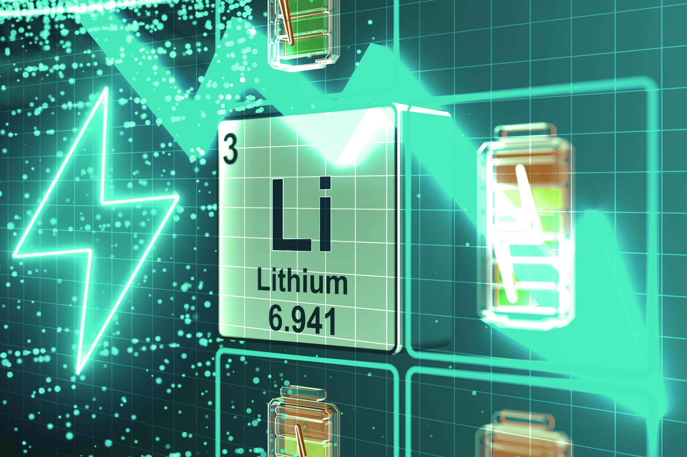

A battery is an electrochemical device that stores chemical energy and converts it into electrical energy when needed.
It consists of one or more cells, and each cell has three main components: a positive electrode (cathode), a negative
electrode (anode), and an electrolyte that allows ions to move between the electrodes. When a battery is connected to a
circuit, a chemical reaction takes place inside the cell, releasing electrons at the anode and forcing them to flow
through the external circuit to the cathode, thereby producing an electric current. Batteries are mainly classified into
two categories: primary batteries (non-rechargeable), such as alkaline and zinc-carbon cells, which are designed for
single use, and secondary batteries (rechargeable), such as lead-acid, nickel-cadmium (Ni-Cd), nickel-metal hydride
(NiMH), and lithium-ion batteries, which can be recharged and reused multiple times. The capacity of a battery is
usually measured in ampere-hours (Ah) or milliampere-hours (mAh), which indicates how much charge it can deliver, while
its voltage depends on the electrochemical materials used. For example, a typical alkaline cell provides 1.5 volts,
while a lithium-ion cell provides around 3.7 volts. Batteries are used in almost every aspect of modern life—from small
devices like watches, toys, and remote controls to larger applications like smartphones, laptops, electric vehicles, and
even renewable energy storage systems. Although they provide portable and reliable energy, batteries also have
disadvantages such as limited lifespan, chemical leakage, disposal issues, and environmental pollution if not recycled
properly. With technological advancements, researchers are working on developing next-generation batteries like
solid-state batteries, graphene-based batteries, and flow batteries to provide higher energy density, faster charging,
longer lifespan, and safer operation.

LITHIUM BATTERY
A lithium battery is a type of electrochemical power source that uses lithium or lithium compounds as the active
material in its electrodes, making it one of the most efficient and widely used modern energy storage devices. Lithium
batteries are lightweight, have a high energy density, and can store more energy in a small volume compared to
traditional batteries like lead-acid or nickel-cadmium, which makes them ideal for portable electronics and electric
vehicles. There are two main categories: primary lithium batteries (non-rechargeable), commonly used in devices such as
cameras, watches, and medical equipment, and secondary lithium-ion (Li-ion) or lithium-polymer (Li-Po) batteries
(rechargeable), which are widely used in smartphones, laptops, power banks, drones, and electric cars. A typical
lithium-ion cell consists of a graphite anode, a lithium metal oxide cathode (such as lithium cobalt oxide or lithium
iron phosphate), and an electrolyte that allows lithium ions to move between the electrodes during charging and
discharging. When charging, lithium ions move from the cathode to the anode and are stored there, while during
discharging, they flow back to the cathode, releasing electrical energy to power a device. Lithium batteries are highly
efficient, have low self-discharge rates, and can last through hundreds or even thousands of charge-discharge cycles,
which makes them long-lasting compared to other rechargeable batteries. They also support fast charging and high current
output, which is why they are preferred in high-performance applications. However, they come with challenges such as
sensitivity to overcharging, overheating, and physical damage, which can lead to safety risks like thermal runaway or
fire if not managed properly. For this reason, lithium batteries are often paired with a Battery Management System (BMS)
that monitors voltage, temperature, and current to ensure safe operation. Despite these risks, ongoing research is
making lithium batteries safer and more powerful, and they are also playing a critical role in renewable energy storage
systems, smart grids, and electric mobility, helping the world move towards cleaner and more sustainable energy
solutions.